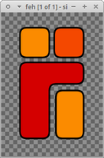
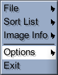

Feh
Dieser Artikel wurde für die folgenden Ubuntu-Versionen getestet:
Ubuntu 14.04 Trusty Tahr
Zum Verständnis dieses Artikels sind folgende Seiten hilfreich:
Feh  ist ein vielseitiger, sehr schneller Bildbetrachter und wird über die Kommandozeile gesteuert. Das Programm ist insbesondere bei Nutzern eines alternativen Fenstermanagers wie z.B. Openbox beliebt, um ein Hintergrundbild zu setzen. Das Programm bietet unter anderem folgende Funktionen:
ist ein vielseitiger, sehr schneller Bildbetrachter und wird über die Kommandozeile gesteuert. Das Programm ist insbesondere bei Nutzern eines alternativen Fenstermanagers wie z.B. Openbox beliebt, um ein Hintergrundbild zu setzen. Das Programm bietet unter anderem folgende Funktionen:
|  |
| Bild mit Transparenz |
Bildanzeige (lokal und entfernt)
Diashow
Sortierung
Thumbnail-Browsen
dynamisches Zoomen
Maus-Wheel/Tastaturunterstützung
Installation¶
Folgendes Paket muss installiert [1] werden:
feh (universe)
 mit apturl
mit apturl
Paketliste zum Kopieren:
sudo apt-get install feh
sudo aptitude install feh
|  |
| Menü |
Benutzung¶
Der Bildbetrachter wird über das Terminal [2] gestartet:
feh simple.png
Es können auch mehrere Bilder aufgerufen werden. Entweder per Wildcats, den entsprechenden Dateinamen oder :
feh -r /Pfad/zu/den/Bildern #ruft das gewählte Verzeichnis auf und durchsucht dieses rekursiv
Weitere Start-Parameter sind in den Manpages zu finden. Diese sind frei kombinierbar:
feh -tr /Pfad/zu/den/Bildern #ruft das gewählte Verzeichnis auf, durchsucht dieses rekursiv und erstellt einen Index
Nachdem das Bild mittels des obigen Befehls gestartet wurde, öffnet sich das Bearbeitungsfenster. Nun steuert man das Programm mittels Maus und Tastatur:
| Feh | |
| Tasten | Beschreibung |
 | Bild verschieben |
|
Strg + | Bild schärfen |
 | Dynamisches Zoomen |
|
Strg + | Bild drehen |
| ← → | Zwischen Bildern wechseln - sofern mehrere Bilder aufgerufen wurden |
 | Kontextmenü |
Menü¶
Über das Menü erreicht man diverse Unterpunkte:
| Menü | |
| Menüpunkt | Inhalt |
| "File" | Änderungen rückgängig machen, Bild speichern, Bild als Hintergrund... |
| "Sort List" | Liste sortieren nach: Dateiname, Bildname und Zufall |
| "Image Info" | Dateiname, Dateigröße, Bildgröße und Dateiformat |
| "Options" | Zoom, Vollbild, Dateiname ein/ausblenden... |
| "Exit" | Programm beenden |
Problemlösungen¶
Hintergrundbild¶
Hat man ein Bild als Desktop-Hintergrund festgelegt und möchte dies unter Xfce wieder rückgängig machen, muss man in den Einstellungen von Xfce unter Arbeitsplatz die Option "Xfce den Arbeitsplatz verwalten lassen" wieder aktivieren.
Links¶
Bilderliste mit Feh erstellen und Übergabe an andere Programme (Forumsbeitrag)
pybgsetter
(grafische Oberfläche)Bambus
 (grafische Oberfläche)
(grafische Oberfläche)
- Erstellt mit Inyoka
-
 2004 – 2017 ubuntuusers.de • Einige Rechte vorbehalten
2004 – 2017 ubuntuusers.de • Einige Rechte vorbehalten
Lizenz • Kontakt • Datenschutz • Impressum • Serverstatus -
Serverhousing gespendet von